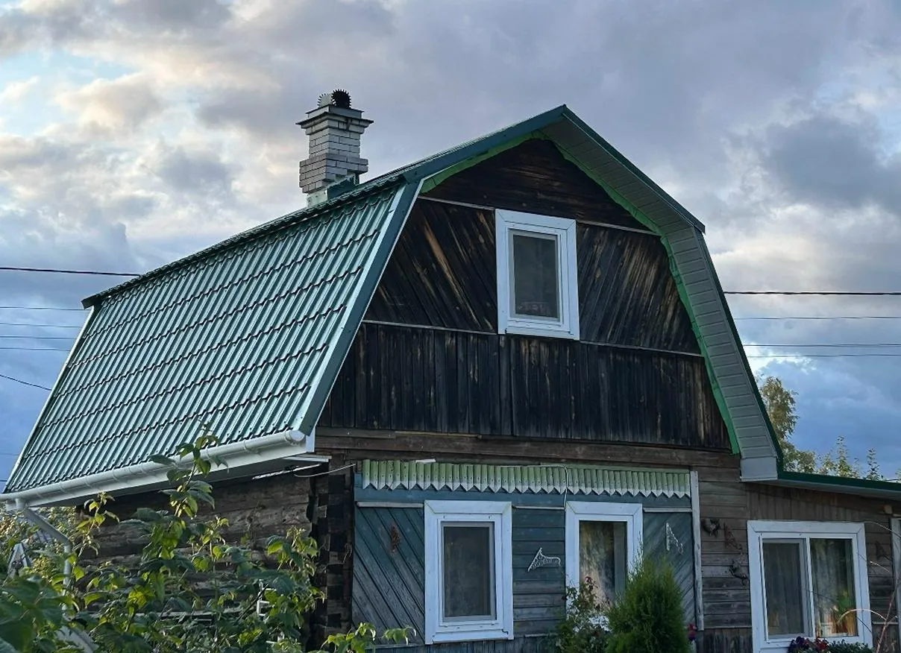
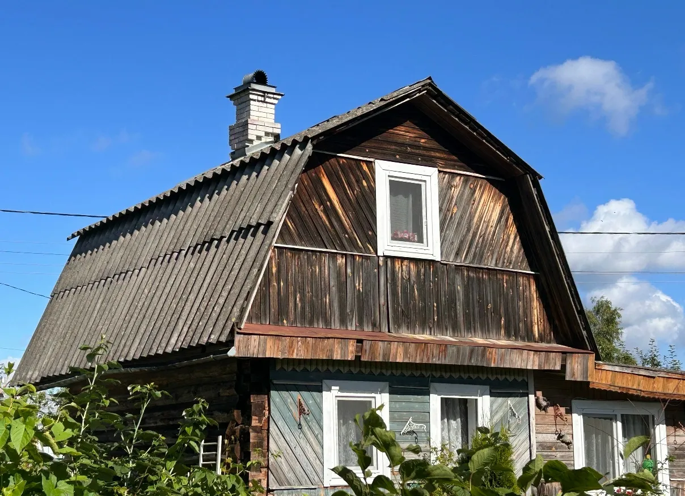
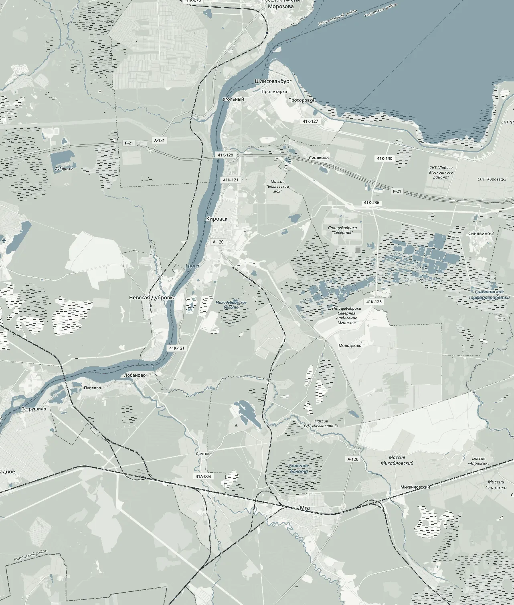

Кировский район и вся Ленинградская область
Крыши, фасады, пристройки и ремонт под ключ
Русская бригада Дмитрия из Кировска. Приезжаем на бесплатный замер, считаем смету с фиксированной ценой и берём деньги только за сделанный этап.
- 5,0по 5 отзывам ВКонтакте
- 5+ летстроим и ремонтируем
- 1 годгарантии под ключ
- 0 ₽замер и консультация


Деньги вперёд не берёмВы платите за то, что уже сделано качественно и в срок
- Смета с фиксированной ценойДетально по работам, без скрытых платежей
- Оплата по этапамОкончательный расчёт после завершения
- По СНиП и ГОСТРаботали с государственными объектами
- Без выходных и праздниковПенсионерам скидка, на ремонт квартир 10%
Что строим и ремонтируем
От отмостки и дренажа до пристройки с душевой. Точная цена появляется после бесплатного замера, в смете с фиксированной суммой.
Объекты на карте района
Большая часть работ в Кировском районе: Мга, Кировск, Шлиссельбург, Павлово, Михайловский. Нажмите на точку, чтобы посмотреть, что там сделали.

© участники OpenStreetMapРаботы бригады
Все фото с наших объектов. Откройте карточку, внутри фото по этапам и описание работ.
До и после
Как было до начала работ и как стало в день сдачи, на тех же объектах.
Как работаем
Шесть шагов от звонка до гарантии. На каждом вы знаете, сколько стоит работа и что уже сделано.
- Звонок или заявкаРасскажите, что нужно сделать. Дмитрий ответит сам и сразу подскажет, как лучше.
- Бесплатный замерПриезжаем на объект, смотрим, замеряем и консультируем на месте.
- СметаДетальная смета с фиксированной ценой. Никаких сюрпризов в конце.
- Работа по этапамСтроим по СНиП и ГОСТ, держим в курсе, по ходу учитываем ваши пожелания.
- Оплата после этапаДеньги вперёд не берём. Окончательный расчёт после завершения.
- Гарантия 1 годПри работе под ключ с нашим материалом.
Работали с госучреждениями
Там требования строже, чем в частном доме: негорючие материалы, нормы, приёмка. Эти объекты сданы.
Отзывы
Отзывы оставлены в группе бригады. Тексты без правок.
Все отзывы во ВКонтактеДмитрий с напарником выполняли у нас работу по очистке потолка от плитки и обработке средством от образования плесени. Перед основной работой все подготовили: закрыли пленкой мебель, после удаления промазали швы, убрали за собой мусор. Все сделали быстро (за 3 часа!) и качественно! Большое спасибо!
Большое спасибо Дмитрию и Сергею за выполненную работу: демонтаж старого пола, подготовку и выравнивание основания, укладку плит ДСП и кварцвинила. Работали профессионально и быстро, учитывая все пожелания! Будем обращаться еще.
Замечательная бригада, сделали прекрасный ремонт, спасибо большое за такую чистую и аккуратную работу, всё сделали на высшем уровне, после работы оставили чистоту и порядок, будем обращаться ещё за помощью и не раз.
Обращался несколько раз, делали отмостку дома и армопояс первого этажа, и установку крыши под ключ. Общение с мастером понравилось, цены умеренные. Делали всё быстро. Рекомендую!
Воплощают технические задания, ребята с профессиональной подготовкой, все виды работ и демократичные цены. Буду сотрудничать в дальнейшем. Могу порекомендовать.
Отличная строительная бригада, ребята профессионалы своего дела. Делают все качественно и в поставленный срок.
Частые вопросы
Не нашли ответ? Позвоните Дмитрию: +7 905 250-51-00
Где вы работаете?
База в Кировске. Чаще всего работаем в Кировском районе: Мга, Кировск, Шлиссельбург, Павлово, Михайловский, Горы, садоводства вокруг. Выезжаем по всей Ленинградской области, был объект и в Выборге.
Замер платный?
Нет. Приезжаем на замер и консультацию бесплатно, после замера составляем смету.
Сколько стоит работа?
Зависит от объёма и материалов, поэтому цену называем после замера, в детальной смете. Цена в смете фиксированная, скрытых платежей нет. Пенсионерам скидка, на ремонт квартир действует скидка 10%.
Как платить?
Поэтапно. Деньги вперёд не берём: вы платите за этап, когда он сделан. Окончательный расчёт после завершения всей работы.
Какая гарантия?
Один год при работе под ключ с нашим материалом.
Беретесь исправлять за другими?
Да. Доделывали дом за бригадой, которая взяла деньги и бросила объект, и переделывали отделку после неумелых мастеров. Пример есть в разделе работ.
Возьмётесь за небольшую работу?
Да. Очистить потолок от плитки и обработать от плесени, сделать черновой тёплый пол, поставить ворота или проложить дренаж. Некоторые такие работы делаем за один день.
Работаете в выходные?
Работаем ежедневно, без выходных и праздников.
Бесплатный замер
Оставьте заявку или позвоните. Дмитрий перезвонит, уточнит задачу и договорится о выезде.
+7 905 250-51-00 Дмитрий, бригадир. Ежедневно, без выходных- БазаКировск, Ленинградская область
- ВыездКировский район и вся Ленобласть
- Группаvk.ru/clubsroika